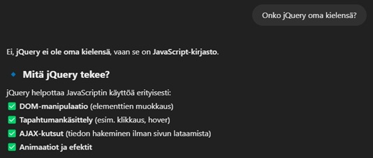

Kurssin palauteosio, jossa kootaan tiivistyneesti oma osaaminen ennen ja jälkeen kurssin.
Vertaa siis tietojasi / taitojasi lähtötilanteessa suhteessa tämän päivän tieto-/taitotasoon.
Lähtötilanne osaamisellani on ollu stabiilisti HTML/PHP/CSS -pohjainen vuosien harrastelun jälkeen, mutta kokemuksia ei ole ollut Bootstrapista, JavaScriptistä, jQuerystä eikä liiemmin JSONistakaan. Kurssin myötä olen löytänyt uusia termejä, uusia tapoja suorittaa aiemmin tuttuja asioita ja keksinyt tehokkaampia keinoja ilmaista asioita mikä aiemmin vei useampia rivjeä. Olen silti enemmän manuaalisen ja persoonallisen CSS muotoilun kannalla enemmän kuin Bootstrap-tyylin ystävä. Internet kaipaa persoonallisuutta enemmän kuin kaikken yhteen muottiin.
Pohdi myös ajankäyttöäsi suhteessa kurssin laajuuteen 5 op (= 133 tuntia opiskelijan työtä).
Osa tehtävistä on vaatinut pitkiäkin aikoja, jopa lähemmäs 30 tuntia suoritukseen ja asioiden selvennykseen, mutta kuvittelen että kauttaaltani olen päässyt vähän alle 133 tuntiin. Työläin ajansyöjä on ollut blogin ylläpitäminen ja sinne tekstin kirjoittaminen.
Kerro mitkä asiat tukivat oppimistasi ja mitkä kenties häiritsivät sitä.
Oppimistani häiritsi runsas teoria ilman mielikuvituksellisia käytännönharjoitteita. Harjoitusten käyminen W3Schoolsin sivuilta luennon aikana ei opeta itselleni enempää kuin mitä itsenäisesti joudun tutkimaan uudelleen. Näihin olisi hyvä saada variaatioita, uusia näkemyksiä ja kokemuksia. Olisi paras, jos harjoitteet olisivat värikkäitä, mielenkiintoisia ja monipuolisia ja uniikkeja.
Saitko riittävästi ohjausta / apua ja tulitko kuulluksi kurssin aikana? Tulitko pyytäneeksi apua / keskustelleeksi kurssin asioista?
Koska aika oli rajallista ja tein valtaosan tehtävistä myöhään ilta-aikaan, pyysin usein tekoälyä selittämään minulle asioita ja termejä auki, kuten esimerkiksi selvennys kuvanmukaiseen jQueryyn:

Mitkä olivat kurssin kohokohdat ja mitä jäit kaipaamaan?
Jäin kaipaamaan enemmän selkeyttä aikalailla kaikkeen. Kurssi raapaisi pintaa monesta asiasta, mutta esimerkiksi jQueryyn tutustumisen sijaan olisi ollut hyödyllistä oppia runsaasti enemmän elementtien muokkaamisesta eri tyylilajein.
Muistelun oheen voit myös kirjata mahdolliset tulevaisuuden suunnitelmasi web-ohjelmointiin liittyen: oletko aikeissa jatkaa tämän aiheen parissa muilla kursseilla, itsenäisesti tai kenties tulevassa työssäsi.
Web-ohjelmointi oli pohjasyy siihen että hain ammattikorkekouluun, ideana saada syvennystä ja laajempaa osaamista itselle tärkeän asian parissa. Toivon, että voin jonain päivänä työstää itseni täysin nettisivujen laatimisella.